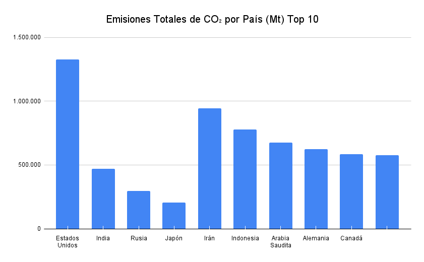
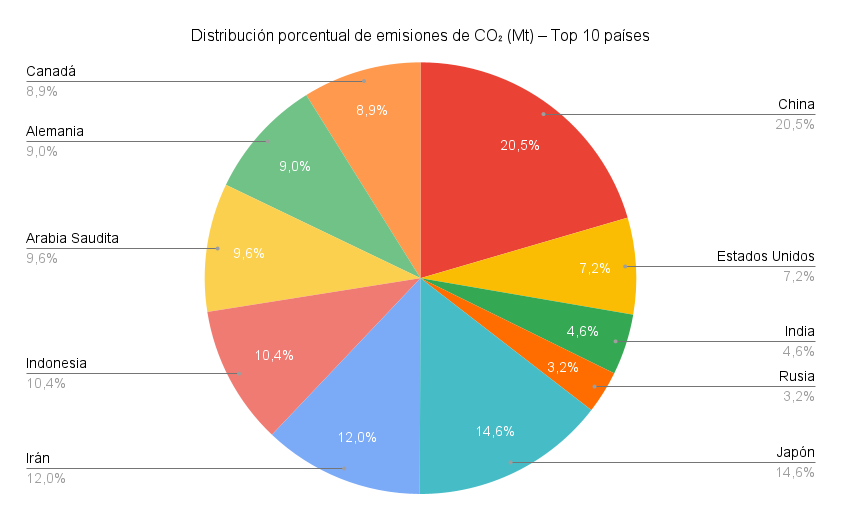

Visualización de Emisiones de CO₂
Nombre:
Andrés Vallejo
Proyecto en GitHub:
Ver repositorio
Proyecto en StackBlitz:
Ver proyecto
Gráfico 1: Emisiones Totales de CO₂ por País (Mt) – Top 10

Gráfico 2: Distribución porcentual de emisiones de CO₂ – Top 10
